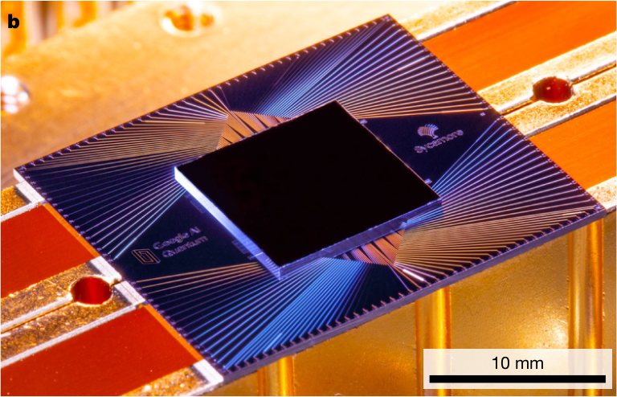
Fig. 1 The Sycamore processor. a, Layout of processor, showing a rectangular
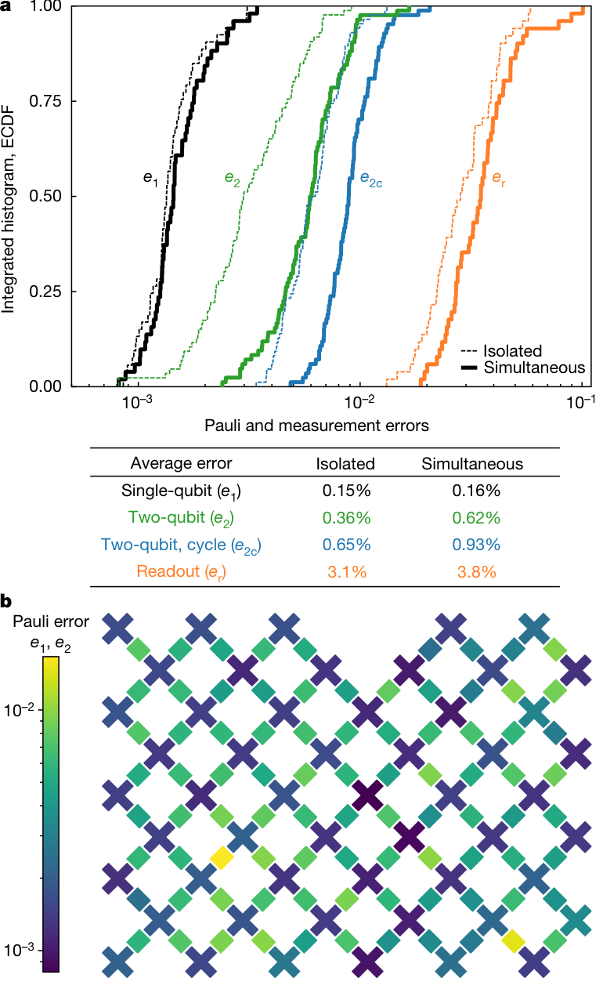
Fig. 2 System-wide Pauli and measurement errors. a, Integrated histogram
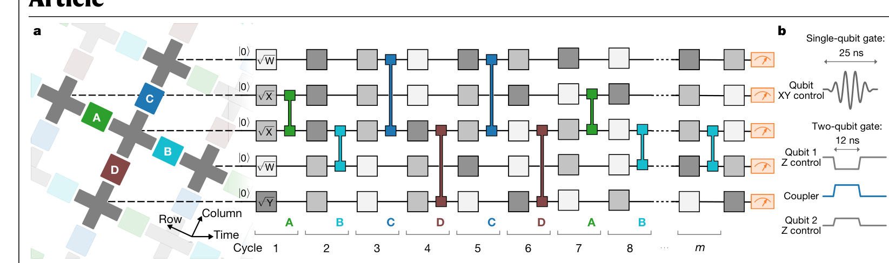
Fig. 3 Control operations for the quantum supremacy circuits. a, Example
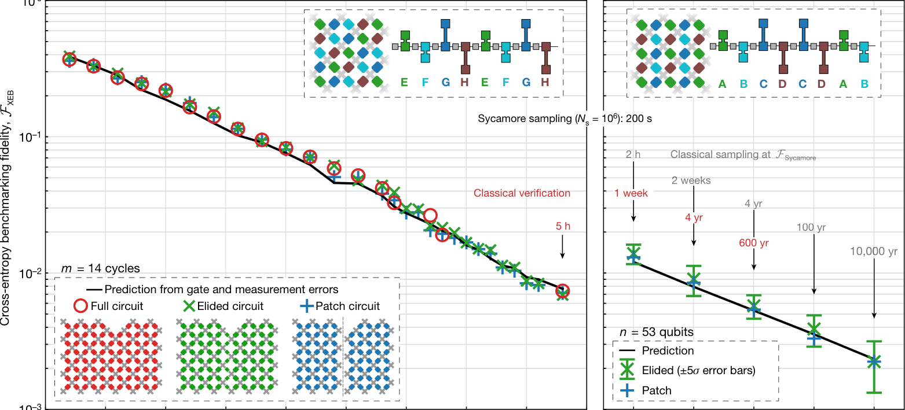
Fig. 4 Demonstrating quantum supremacy. a, Verification of benchmarking
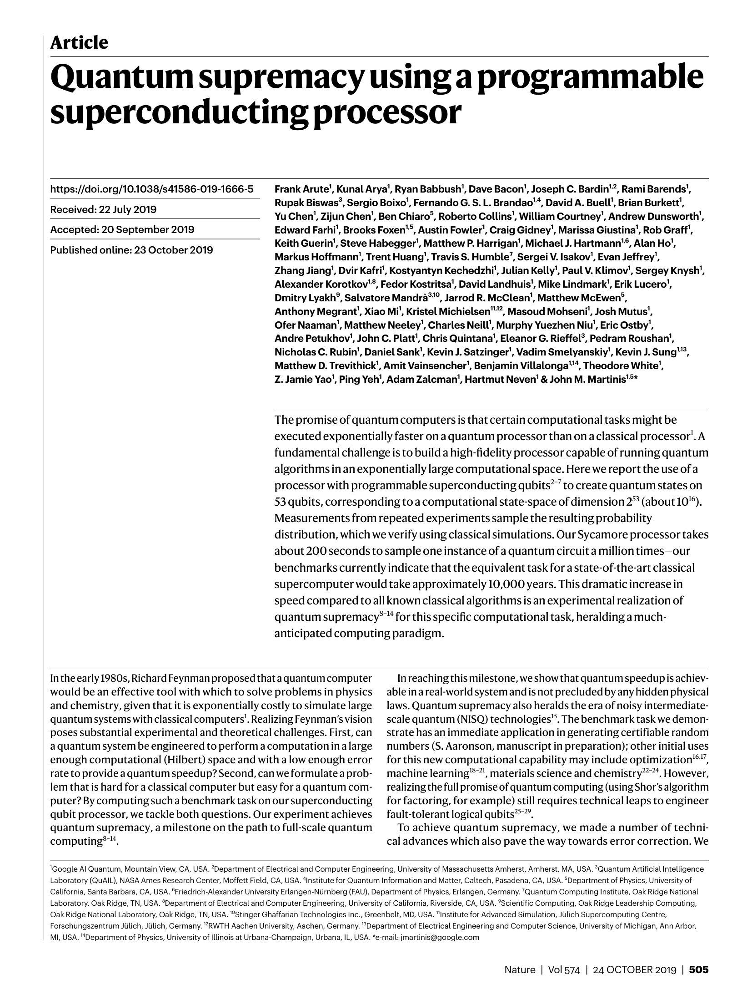
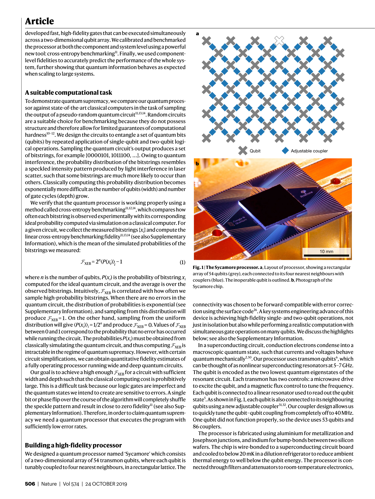
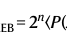
= 2 ⟨( )⟩−1
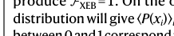
distribution will give ⟨P(xi)⟩i = 1/2n and produce F
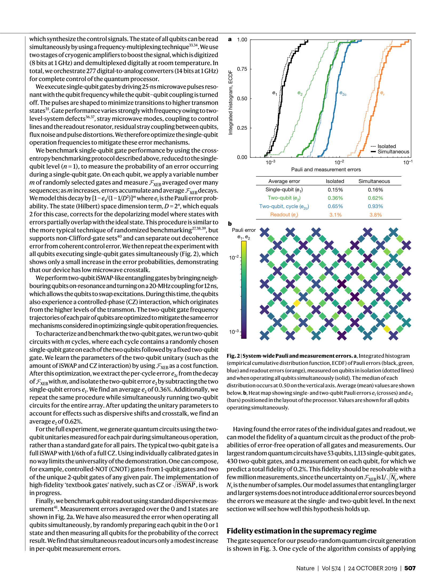
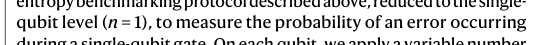
qubit level (n = 1), to measure the probability of an error occurring
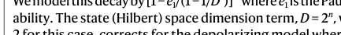
ability. The state (Hilbert) space dimension term, D = 2n, which equals
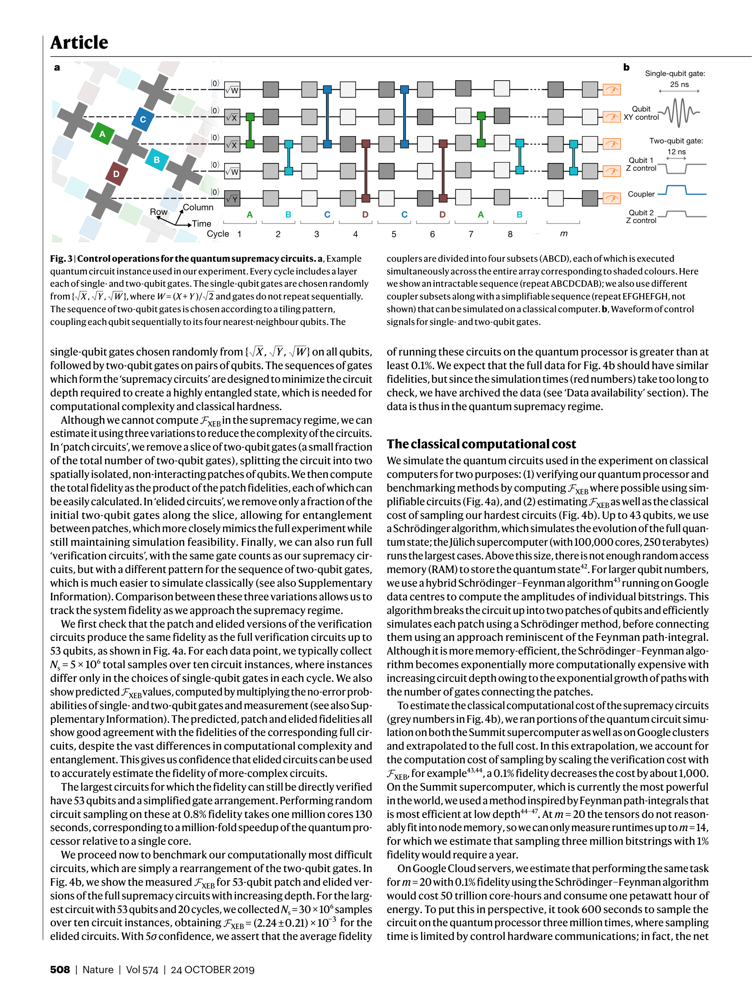
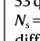
Ns = 5 × 106 total samples over ten circuit instances, where instances
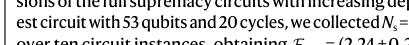
est circuit with 53 qubits and 20 cycles, we collected Ns = 30 × 106 samples
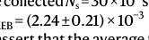
= (2.24±0.21) × 10
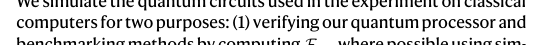
computers for two purposes: (1) verifying our quantum processor and
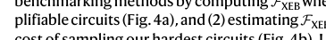
plifiable circuits (Fig. 4a), and (2) estimating FXEB as well as the classical
is most efficient at low depth44–47. At m = 20 the tensors do not reason-
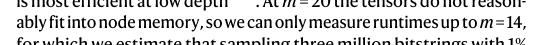
ably fit into node memory, so we can only measure runtimes up to m = 14,
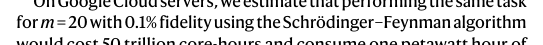
for m = 20 with 0.1% fidelity using the Schrödinger–Feynman algorithm
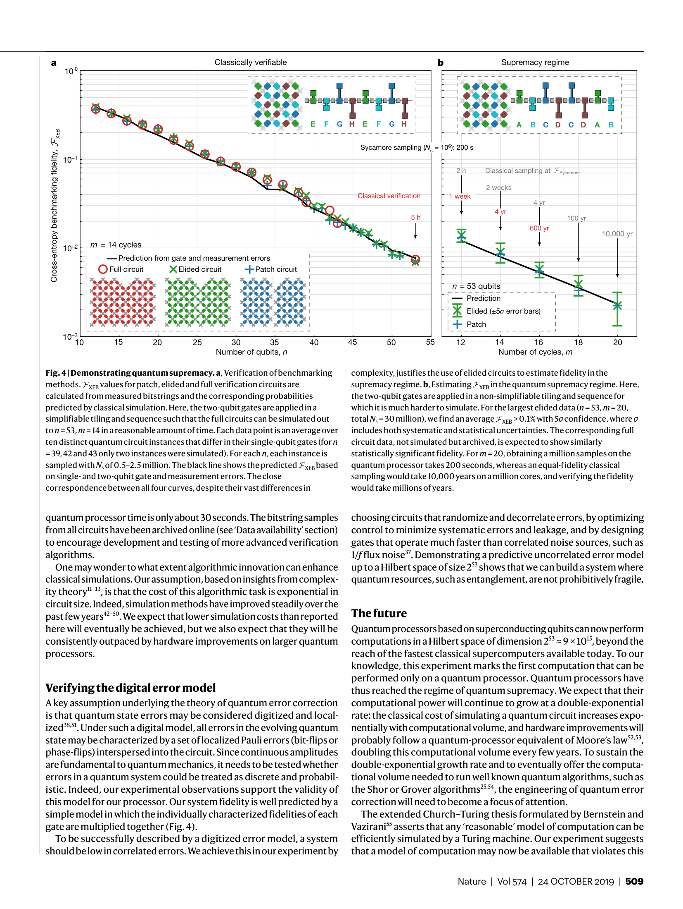
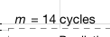
m = 14 cycles
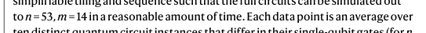
to n = 53, m = 14 in a reasonable amount of time. Each data point is an average over
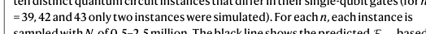
= 39, 42 and 43 only two instances were simulated). For each n, each instance is
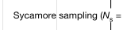
Sycamore sampling (Ns = 106): 200 s
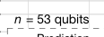
n = 53 qubits
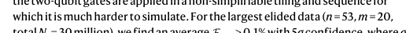
which it is much harder to simulate. For the largest elided data (n = 53, m = 20,
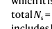
total Ns = 30 million), we find an average FXEB > 0.1% with 5σ confidence, where σ
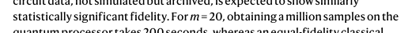
statistically significant fidelity. For m = 20, obtaining a million samples on the
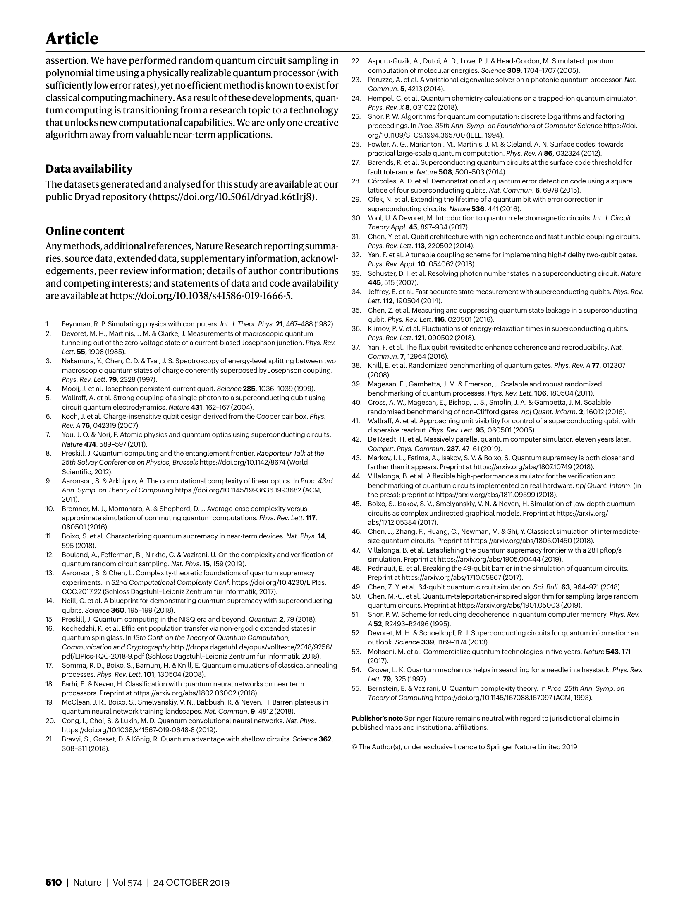
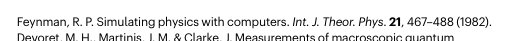
Feynman, R. P. Simulating physics with computers. Int. J. Theor. Phys. 21, 467–488 (1982).
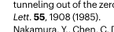
Lett. 55, 1908 (1985).
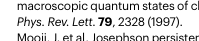
Phys. Rev. Lett. 79, 2328 (1997).
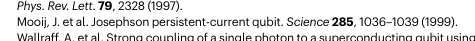
Mooij, J. et al. Josephson persistent-current qubit. Science 285, 1036–1039 (1999).
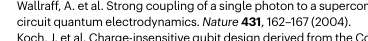
circuit quantum electrodynamics. Nature 431, 162–167 (2004).
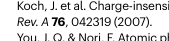
Rev. A 76, 042319 (2007).
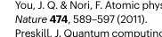
Nature 474, 589–597 (2011).
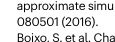
080501 (2016).
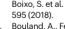
595 (2018).
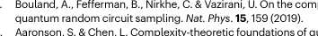
quantum random circuit sampling. Nat. Phys. 15, 159 (2019).
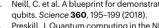
qubits. Science 360, 195–199 (2018).
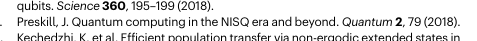
Preskill, J. Quantum computing in the NISQ era and beyond. Quantum 2, 79 (2018).
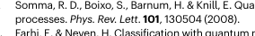
processes. Phys. Rev. Lett. 101, 130504 (2008).
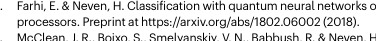
processors. Preprint at https://arxiv.org/abs/1802.06002 (2018).
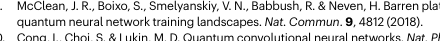
quantum neural network training landscapes. Nat. Commun. 9, 4812 (2018).
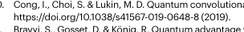
https://doi.org/10.1038/s41567-019-0648-8 (2019).
308–311 (2018).
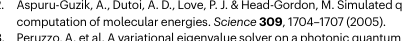
computation of molecular energies. Science 309, 1704–1707 (2005).
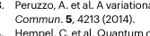
Commun. 5, 4213 (2014).
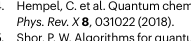
Phys. Rev. X 8, 031022 (2018).
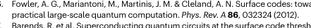
practical large-scale quantum computation. Phys. Rev. A 86, 032324 (2012).
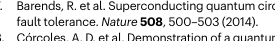
fault tolerance. Nature 508, 500–503 (2014).
lattice of four superconducting qubits. Nat. Commun. 6, 6979 (2015).
superconducting circuits. Nature 536, 441 (2016).
Theory Appl. 45, 897–934 (2017).
Phys. Rev. Lett. 113, 220502 (2014).
Phys. Rev. Appl. 10, 054062 (2018).
445, 515 (2007).
Lett. 112, 190504 (2014).
qubit. Phys. Rev. Lett. 116, 020501 (2016).
Phys. Rev. Lett. 121, 090502 (2018).
Commun. 7, 12964 (2016).
(2008).
benchmarking of quantum processes. Phys. Rev. Lett. 106, 180504 (2011).
randomised benchmarking of non-Clifford gates. npj Quant. Inform. 2, 16012 (2016).
dispersive readout. Phys. Rev. Lett. 95, 060501 (2005).
Comput. Phys. Commun. 237, 47–61 (2019).
farther than it appears. Preprint at https://arxiv.org/abs/1807.10749 (2018).
the press); preprint at https://arxiv.org/abs/1811.09599 (2018).
abs/1712.05384 (2017).
size quantum circuits. Preprint at https://arxiv.org/abs/1805.01450 (2018).
simulation. Preprint at https://arxiv.org/abs/1905.00444 (2019).
Preprint at https://arxiv.org/abs/1710.05867 (2017).
49. Chen, Z. Y. et al. 64-qubit quantum circuit simulation. Sci. Bull. 63, 964–971 (2018).
quantum circuits. Preprint at https://arxiv.org/abs/1901.05003 (2019).
A 52, R2493–R2496 (1995).
outlook. Science 339, 1169–1174 (2013).
(2017).
Lett. 79, 325 (1997).